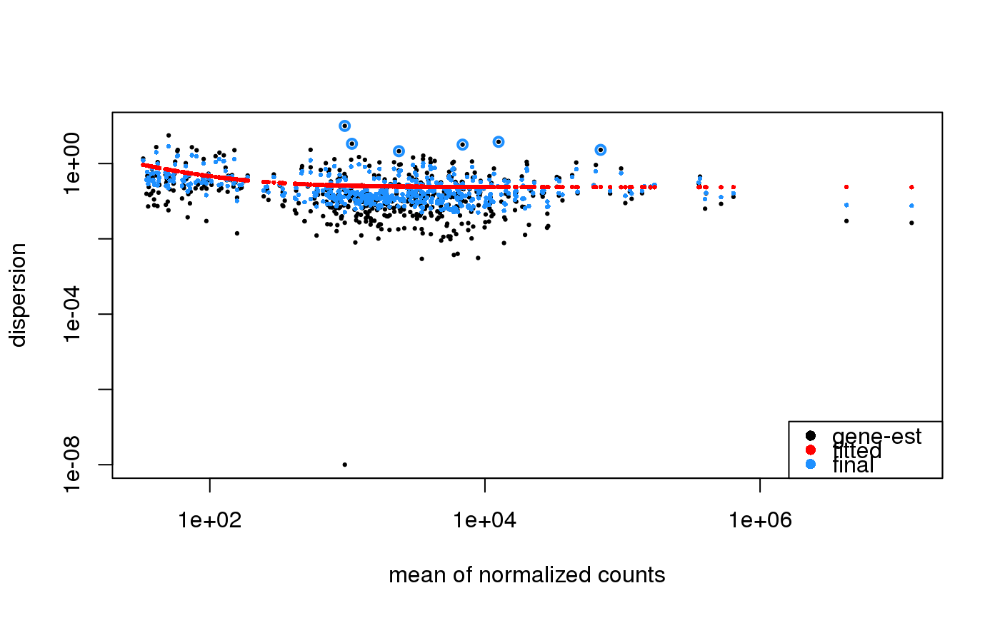
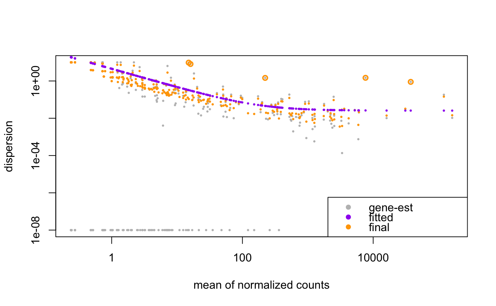

A simple helper function that plots the per-gene dispersion estimates together with the fitted mean-dispersion relationship.
# S4 method for bcbioRNASeq plotDispEsts(object, ymin, CV = FALSE, genecol = "black", fitcol = "red", finalcol = "dodgerblue", legend = TRUE, xlab, ylab, log = "xy", cex = 0.45, ...)
| object | Object. |
|---|---|
| ymin | the lower bound for points on the plot, points beyond this are drawn as triangles at ymin |
| CV | logical, whether to plot the asymptotic or biological
coefficient of variation (the square root of dispersion) on the y-axis.
As the mean grows to infinity, the square root of dispersion gives
the coefficient of variation for the counts. Default is |
| genecol | the color for gene-wise dispersion estimates |
| fitcol | the color of the fitted estimates |
| finalcol | the color of the final estimates used for testing |
| legend | logical, whether to draw a legend |
| xlab | xlab |
| ylab | ylab |
| log | log |
| cex | cex |
| ... | further arguments to |
ggplot.
This plot shows the dispersion by mean of normalized counts. We expect the dispersion to decrease as the mean of normalized counts increases.
Here we're generating a DESeqDataSet object on the fly, which already has
method support for plotting dispersion, provided by the DESeq2 package.
#>#>#>#>#>#>#>## Custom colors, using DESeq2 parameters. plotDispEsts( object = bcb, genecol = "gray", fitcol = "purple", finalcol = "orange" )#>#>#>#>#>#>#>